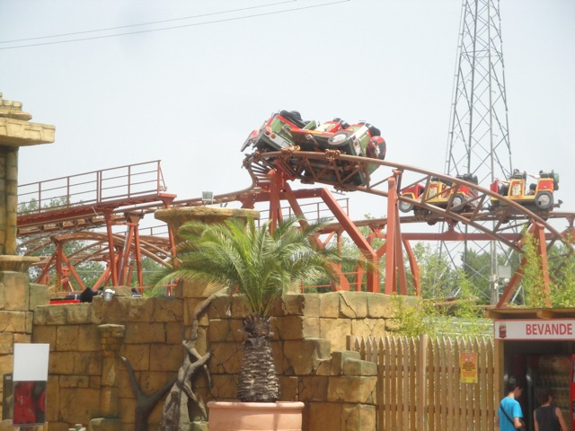

| |
Master Thai Review

Today at Mirabilandia, we'll be reviewing Master Thai. An odd little coaster that looks kind of interesting (but not really). Whatever, let's just get this over with. Get in, pull down lap bar, and we're off. Now technically this is a racing coaster. So yeah, the others are shaking their fists at us and declaring us enemies, trying to get in the spirit of coaster racing, but ugh. I'm not in the mood. I don't care. This ride is too sh*tty to have a coaster race on. We climb up the lifthill, go around this turn with a large portion of straight track in the middle before we drop down into the mess. Wee. The drop is fun and gives us some speed. We then hop over a small bunny hop. There's no airtime or anything, but its still fun. Maybe this'll be an enjoyable ride after all. We then head up a curved hill and SLAM!!! Nope, this ride is a rough peice of sh*t. All hopes of this being fun are now ruined. We them go through another turn and head into a midcourse brake. Ugh. We then head around another turn, down a slight helix kind of drop before going through a banked turnaround. And into the brake run. Well, it sucks. But at least it's a short coaster. Right? NOPE! You know how I said that Master Thai was a racing coaster? Well, it's actually a Mobius Coaster, just like Racer @ Kennywood. However, unlike Racer and the other Mobius Racers, Master Thai doesn't just let you out on the other side. Nope, you actually go around twice and end up back on the side you boarded. DAMMIT! I didn't want to go twice! Oh well. So for those coaster snobs who refuse to count the Mobius Racers unless you ride both sides (screw your logic, I'm counting Racer despite only doing one side), you don't have to worry. You will get your "complete" Master Thai credit. And really, this ride is only good for credit whoring. And that's it. I'm sorry people who like this ride, but it sucks.
4/10
Location: Mirabilandia
Opened: 2011
Built by: Preston & Barbieri
Last Ridden: June 20, 2012
Master Thai Photos


Home
|